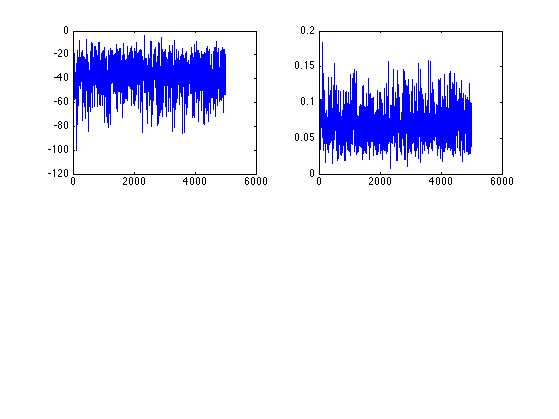
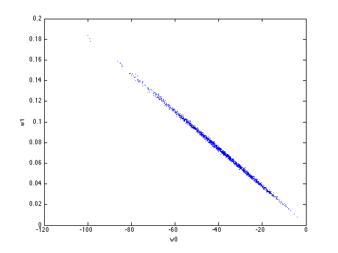
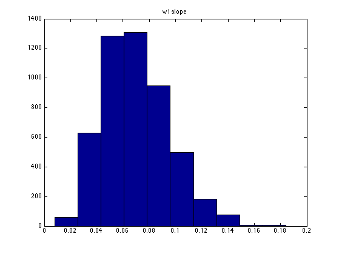
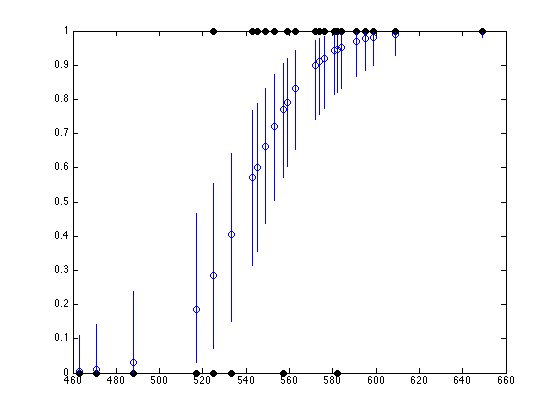
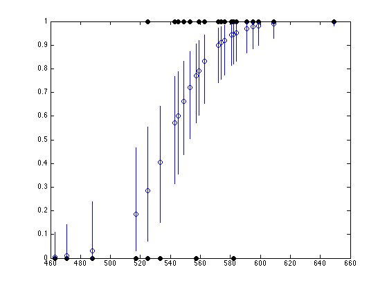

Metropolis Hastings Logistic Regression Demo
Example from Johnson and Albert p87
Contents
% This file is from pmtk3.googlecode.com function [X, y, ws, perm] = logregGradeMH()
[X,y] = satDataLoad; model = logregBinaryFitL2IRLS(X, y, 1e-8, false); w = model.w; C = model.C; % MH setSeed(1); xinit = w; Nsamples = 5000; lambda = 0; %targetArgs = {X,y,lambda}; sigmaMH = 2.38^2/2; %proposalArgs = {sigmaMH*C};
nested function
function bnew = proposal(w) mu = zeros(1, length(w)); bnew = w + gaussSample(mu, sigmaMH*C, 1); end function p = logpost(w, X, y, lambda) mu = 1 ./ (1 + exp(-X*w(:))); p = sum( (y.*log(mu) + (1-y).*log(1-mu))) + lambda/2*sum(w.^2); end function p = target(w) p = logpost(w, X, y, lambda); end
main
%[ws, naccept] = metropolisHastings(@logpost, @proposal, xinit,... % Nsamples, targetArgs, proposalArgs); [ws, naccept] = metropolisHastings(@target, @proposal, xinit, Nsamples); % trace plots figure for i=1:2 subplot(2,2,i) plot(ws(:,i)); end % samples figure; plot(ws(:,1), ws(:,2), '.'); xlabel('w0'); ylabel('w1') printPmtkFigure('logregSatMhDemoPostBoth') figure hist(ws(:,2)); title('w1 slope') printPmtkFigure('logregSatMhDemoPost1') figure hist(ws(:,1)); title('w0 intercept') printPmtkFigure('logregSatMhDemoPost0') MLE = xinit; postMean = mean(ws,1); postMedian = median(ws,1); % visualize model fit for each training point figure perm = sortidx(X(:, 2), 'ascend'); N = length(perm); for ii=1:N i = perm(ii); ps = 1 ./ (1+exp(-X(i,:)*ws')); % ps(s) = p(y=1|x(i,:), bs(s,:)) row vec plot(X(i,2), median(ps), 'o'); hold on h=plot(X(i,2), y(i), 'ko'); set(h,'markerfacecolor', 'k'); % prediction interval tmp = sort(ps, 'ascend'); Q5 = tmp(floor(0.05*Nsamples)); Q95 = tmp(floor(0.95*Nsamples)); line([X(i,2) X(i,2)], [Q5 Q95]); end printPmtkFigure('logregSatMhDemoPostPred') %logregSATdemo  
 
 end
ans =
1 525
1 533
1 545
1 582
1 581
1 576
1 572
1 609
1 559
1 543
1 576
1 525
1 574
1 582
1 574
1 471
1 595
1 557
1 557
1 584
1 599
1 517
1 649
1 584
1 463
1 591
1 488
1 563
1 553
1 549